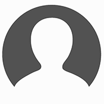

<style>
  #login {
    display: block;
    text-align: center;
    margin: auto;
  }
</style>

<ion-side-menus enable-menu-with-back-views="true">
  <ion-side-menu-content>
    <ion-nav-bar class="bar-stable">

      <ion-nav-buttons side="left">
        <button class="button button-icon ion-navicon" menu-toggle="left"></button>
      </ion-nav-buttons>
    </ion-nav-bar>
    <ion-nav-view name="menuContent"></ion-nav-view>
  </ion-side-menu-content>

  <ion-side-menu side="left">
    <ion-header-bar class="bar-stable">
      <h1 class="title"></h1>
    </ion-header-bar>
    <ion-content>
      <ion-list>
        <ion-item menu-close>
          <div id="login">
            </br>
            Nom Utilsateur</br>
            Manager</br>
            <div id="logOutButon">
              <a href="#/login"><button class="button button-block button-calm">Déconnexion</button></a>
            </div>
          </div>
        </ion-item>
        <ion-item menu-close href="#/app/accueil">
          Accueil
        </ion-item>
        <ion-item menu-close href="#/app/addProfileChoice">
          Gestion des agents
        </ion-item>
        <ion-item menu-close href="#/app/addWorkProfil">
          Attribution parcours/modules
        </ion-item>
      </ion-list>
    </ion-content>
  </ion-side-menu>
</ion-side-menus>

